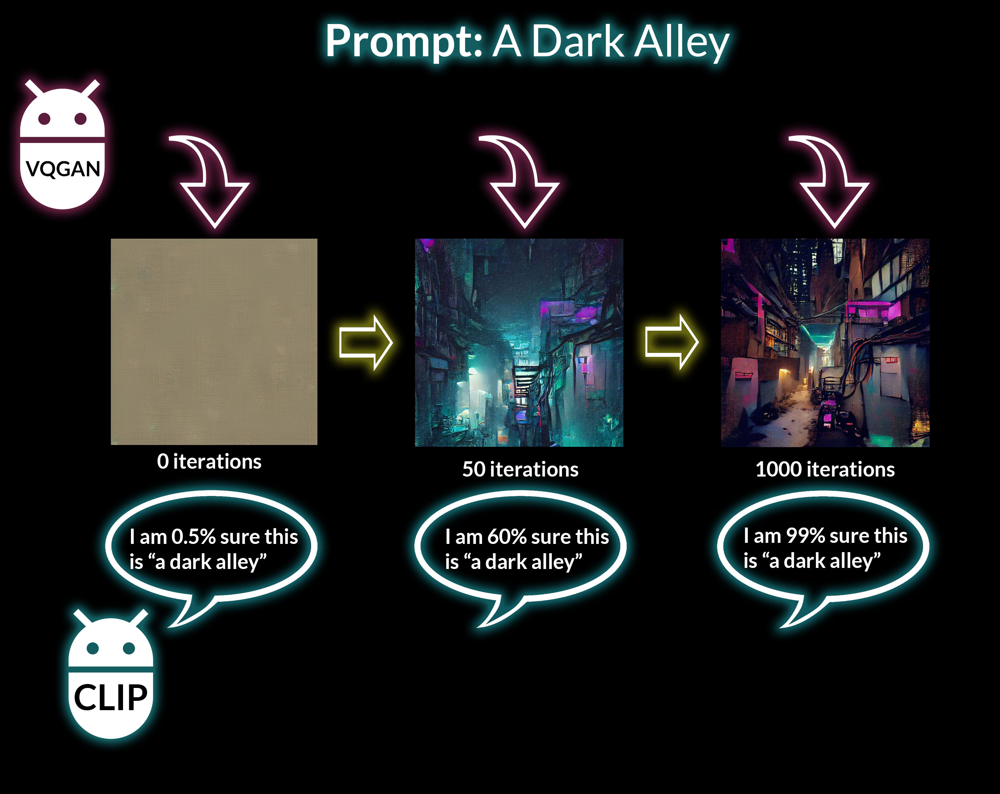

<section id="ai-eplanation" class="blog">
  <div class="container-fluid">
    <div class="container">
      <div class="row">
        <div class="col-12">
          <h1 class="section-header">How it works</h1>
        </div>
      </div>
      <div class="row">
        <p>
          We use a combination of 2 AI-Models: CLIP from OpenAI and VGQAN from
          the University of Heidelberg. The process is actually quite simple.
          VQGAN tried to generate an image based on a text prompt from the user.
          That picture is then analysed by CLIP, which tries to determine how
          close the picture is to the given text prompt. It provides feedback to
          VQGAN, which then tries to generate a new image based on it. After
          hundreds of iterations, the final picture starts to emerge. If you
          have any more questions, feel free to ask on the
          <a
            href="https://discord.gg/EB88RmcbFz"
            style="text-decoration: underline"
            target="_blank"
            >discord</a
          >
          server.
        </p>
      </div>
      <div class="row">
        
      </div>
    </div>
  </div>
</section>
